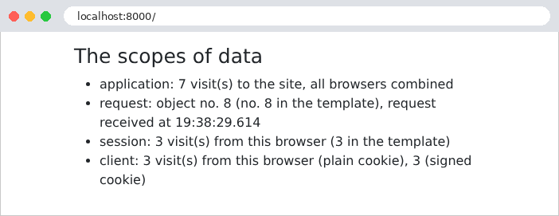

6. Escopos de dados
Uma aplicação web atende muitos usuários ao mesmo tempo, e cada usuário faz inúmeras requisições. Os dados podem, portanto, ser compartilhados em vários níveis, conhecidos como escopo:
- escopo de aplicação: os dados são compartilhados por todos os usuários durante toda a vida da aplicação (a lista de médicos, por exemplo);
- escopo de requisição: os dados existem apenas durante uma requisição (o modelo de um template, o usuário conectado conforme identificado para essa requisição);
- escopo de sessão: os dados são específicos de um usuário e devem persistir de uma requisição para a outra (o idioma selecionado, um carrinho de compras);
- escopo de cliente: dados armazenados no próprio navegador, em um cookie.
Em [Python], esses escopos assumem uma natureza diferente da que os leitores do curso de [Symfony] conhecem, pois a aplicação permanece na memória de uma requisição para a outra (exemplo 01). Os dados armazenados em uma variável de módulo (exemplos 06, 20 e 21) têm naturalmente escopo de aplicação: isso é conveniente e muito rápido. Mas esse escopo tem duas limitações. Primeiro, ele dura apenas o tempo do processo: reiniciar o servidor o apaga. Segundo, ele é específico do processo: em produção, geralmente são iniciados vários processos da aplicação (vários “workers” do [gunicorn], por exemplo), ou até vários servidores atrás de um balanceador de carga, e cada um teria sua própria cópia dos dados. Os dados que realmente precisam ser compartilhados e persistir ao longo do tempo são, portanto, armazenados em um banco de dados ou em um cache compartilhado ([Redis], [Memcached], que o [Django] sabe usar por meio de sua configuração [CACHES]). Em troca da velocidade, o compartilhamento exige disciplina rigorosa: um processo trata várias requisições ao mesmo tempo, em várias threads, e os dados compartilhados modificados por uma delas são visíveis para todas; eles devem ser protegidos por um lock (exemplo 20), e dados pertencentes a um usuário específico nunca devem ser armazenados ali.
No [Django], cada escopo tem seu próprio contêiner:
Escopo | Contêiner | Duração |
aplicação | uma variável de módulo (um único processo), o cache do [Django] (configuração [CACHES]) ou o banco de dados | a do processo; a duração escolhida para o cache; sem limite para o banco de dados |
requisição | o objeto [HttpRequest], ao qual um middleware pode adicionar atributos (exemplo 12); as variáveis locais da view | o processamento de uma requisição |
sessão | a sessão ([request.session], aplicação [django.contrib.sessions]), mantida pelo servidor e recuperada por meio de um cookie | duas semanas por padrão (configuração [SESSION_COOKIE_AGE]) |
cliente | um cookie ([set_cookie], exemplo 22), em texto simples ou assinado ([set_signed_cookie]) | a duração especificada para o cookie |
A sessão do [Django] é, por padrão, uma sessão do lado do servidor, como as do [Java] ([JSESSIONID]) ou do [PHP] ([PHPSESSID]): seus dados ficam armazenados no servidor, e o navegador guarda apenas o identificador — um número aleatório impossível de adivinhar — no cookie [sessionid]. A configuração [SESSION_ENGINE] determina onde os dados são armazenados: no banco de dados (a opção padrão, em uma tabela chamada [django_session]), no cache, em arquivos (a opção usada em nosso exemplo) ou até, como no caso do [Flask], inteiramente em um cookie assinado no dispositivo do cliente.
6.1. Exemplo 23: Escopos
6.1.1. A configuração: config/settings.py
- Linha 17: o tratamento de sessões;
- linhas 21–27: dois middlewares. [SessionMiddleware] recupera a sessão do navegador no início da requisição por meio do cookie [sessionid] e a armazena em [request.session]; no final da requisição, salva a sessão se ela tiver sido modificada e envia o cookie. Ele só lê de fato os dados no primeiro acesso a [request.session]: uma view que não a usa não gera nenhum custo. O segundo middleware é nosso (veja abaixo);
- linhas 31–33: os dados da sessão são armazenados em arquivos — um por sessão — na pasta [var/sessions] do exemplo, que podemos examinar. A linha 33 cria essa pasta se ela não existir ([parents=True]: incluindo as pastas superiores; [exist_ok=True]: sem erro se ela já existir): o arquivo de configuração é [Python], que pode executar código. A opção padrão, o banco de dados, exigiria um banco de dados (próximo capítulo);
- linha 42: o processador de contexto [request]: os templates usarão [request.session] e [request.info].
6.1.2. Os objetos: scopes/counters.py e scopes/middleware.py
- Linha 5: a classe [Counter] do módulo [collections]: um dicionário cujos valores são números e cujas chaves ausentes valem 0;
- Linhas 9–10: os contadores e seu lock, criados quando o módulo é carregado; eles existem enquanto o processo do servidor estiver em execução. Esse é o escopo de aplicação;
- linhas 15–18: mais um número sob uma chave. A operação [+=] não é atômica: ela lê o valor, o incrementa e depois o grava, e duas requisições simultâneas poderiam ler o mesmo valor — uma visita seria perdida. O lock (exemplo 20) evita isso.
- linhas 10–13: informações de escopo de requisição: um número e a hora da requisição;
- linhas 18–28: o middleware cria um objeto [RequestInfo] para cada requisição e o armazena na requisição (exemplo 12). O número é obtido de um contador compartilhado por todas as requisições (o módulo anterior, sob outra chave); portanto, cada objeto tem um número diferente. A hora é escrita incluindo os milissegundos: [%f] representa os microssegundos (seis dígitos), dos quais [[:-3]] remove os três últimos (uma fatia de string: todos os caracteres, exceto os três últimos). O objeto é descartado junto com a requisição.
O [Django] não tem contêiner de serviços e, portanto, não tem “serviço de escopo de requisição”: é a própria requisição que carrega os objetos desse escopo. Os leitores do curso de [Symfony] vão se lembrar de que ocorria o contrário: em [PHP], todo serviço tinha escopo de requisição, e era necessário um cache para obter escopo de aplicação.
6.1.3. Cookies assinados
Um cookie é um dado confiado ao cliente, que pode lê-lo e modificá-lo. Para que um cookie seja confiável, basta que seja assinado: seu valor trafega em texto simples, mas é seguido por uma assinatura que só o servidor sabe calcular, pois ela depende de uma chave secreta. Um valor modificado pelo cliente deixa de ter a assinatura correta, e o servidor o rejeita. O [Django] cuida disso para nós: [response.set_signed_cookie(name, value)] define um cookie assinado, e [request.get_signed_cookie(name, default=...)] retorna seu valor se a assinatura estiver correta; caso contrário, retorna o valor padrão. A assinatura é um HMAC (Hash-based Message Authentication Code): um hash do valor (SHA-256), calculado com a chave secreta da aplicação ([SECRET_KEY], exemplo 01) e um “salt” específico do nome do cookie. [Django] adiciona a data da assinatura, o que permite rejeitar um cookie expirado ([get_signed_cookie(..., max_age=3600)]). A verificação compara as assinaturas em um tempo que não depende do número de caracteres idênticos: uma comparação comum pararia no primeiro caractere diferente, e um atacante poderia, medindo o tempo de resposta, descobrir a assinatura caractere por caractere. O módulo [django.core.signing] oferece as mesmas funções para assinar quaisquer dados ([signing.dumps], [signing.loads]): é esse módulo que assina as mensagens flash do exemplo 20.
Esse é o princípio do token JWT, que o próximo capítulo usará para a autenticação.
6.1.4. A view: scopes/views.py
- linha 12: o escopo de aplicação;
- linha 16: o escopo de sessão. [request.session] é usado como um dicionário: [get(key, default)] lê um valor, e a atribuição o grava. [Django] salva a sessão no final da requisição. Os valores devem ser conversíveis para JSON (strings, números, listas, dicionários): é assim que são armazenados;
- linhas 19–21: o escopo de cliente, com dois cookies. [request.COOKIES] é o dicionário dos cookies enviados pelo navegador. Seus valores são strings fornecidas pelo navegador e podem, portanto, estar ausentes ou ser inválidos: [int] os converte (um cookie chamado [myVisits=abc] lançaria aqui uma exceção [ValueError] e resultaria em um erro 500; uma aplicação real verificaria o valor; veja o exemplo 07). O valor do cookie assinado só é aceito se sua assinatura estiver correta;
- linhas 22–28: o contexto do template;
- linhas 29–31: para definir um cookie, é preciso do objeto de resposta: [render] o constrói (exemplo 13), e depois [set_cookie] e [set_signed_cookie] adicionam os cookies a ele. Sem um tempo de expiração ([max_age]), um cookie dura até o navegador ser fechado (é um cookie “de sessão”, no sentido dos navegadores).
6.1.5. O template: templates/scopes/scopes.html
- linha 16: [request.info], o objeto armazenado na requisição pelo middleware: é o mesmo objeto [RequestInfo] da view; o template exibe seu número, que deve ser o recebido da view;
- linha 19: a sessão também é acessível nos templates, por meio de [request.session].
6.1.6. Execução
Após três visitas em um navegador:

O número do objeto de requisição é maior que o número de visitas: na primeira visita, o navegador também solicitou o ícone do site ([/favicon.ico]), que não existe. Essa requisição, que resultou em um erro 404, passou pelo middleware e teve, portanto, seu próprio objeto [RequestInfo].
Vamos acompanhar as requisições com o [curl], que age como um primeiro navegador, armazenando seus cookies no arquivo [a.txt] (o servidor acabou de ser iniciado):
A resposta define três cookies. O primeiro, [myVisits], contém o valor em texto simples. O segundo, [myVisitsSigned], contém o mesmo valor, seguido de dois-pontos, da data da assinatura (em base 62) e da própria assinatura. O terceiro, [sessionid], é o ID da sessão, válido por duas semanas ([Max-Age=1209600] segundos), [HttpOnly], e [SameSite=Lax] (exemplo 20). Os dados da sessão são armazenados em um arquivo no servidor, [var/sessions/sessionidij72qd9hyuhwoqlplawuxycwg6ggccsq], cujo nome deriva do identificador:
Aqui reconhecemos o formato dos dados assinados do [Django]: os dados, a data e a assinatura. Os dados são JSON codificado em Base64: [eyJ2aXNpdHMiOjF9] decodifica para [{"visits":1}]. O servidor chega a assinar seus próprios arquivos de sessão: um arquivo modificado por terceiros seria rejeitado. Uma segunda visita, com os mesmos cookies:
A sessão é a mesma (mesmo ID); seu cookie é reenviado porque a sessão foi modificada, o que prolonga sua duração. Um segundo “navegador”, com seu próprio arquivo de cookies, inicialmente vazio:
O contador da aplicação continuou; a sessão e os cookies do segundo navegador recomeçam em 1. Cada requisição teve seu próprio objeto [RequestInfo], e em cada uma delas a view e o template foram os mesmos. Por fim, um usuário malicioso forja seus próprios cookies: 1.000 visitas em [myVisits], 999 em [myVisitsSigned] (com uma assinatura inventada) e um ID de sessão de sua própria invenção:
O cookie em texto simples foi aceito como está: 1.001 visitas. O cookie [myVisitsSigned], porém, não tinha a assinatura correta: foi ignorado, como se estivesse ausente. Copiar a assinatura de outro valor (a do valor [1], por exemplo, ao lado do valor [999]) também não funciona: a assinatura depende do valor. Quanto ao ID de sessão inventado, ele não se refere a nenhuma sessão existente: o [Django] o ignora e cria uma nova sessão com um novo ID que ele mesmo escolhe. O usuário não pode, portanto, escolher a sessão de outro usuário.
Vamos guardar a regra: os dados vindos do cliente só são confiáveis se forem protegidos pelo servidor (assinados, como aqui ou como no token do capítulo sobre autenticação, ou criptografados); os dados que não têm nada a esconder e cujo valor é verificado pelo servidor (o idioma no exemplo 22) podem permanecer em texto simples. Uma assinatura garante que um valor não foi alterado, mas não o esconde: um segredo nunca deve ser confiado ao cliente, mesmo que assinado.